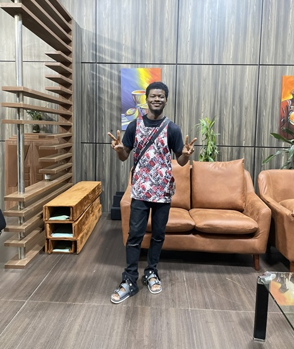

Praise Inioluwa | WDD 130

Hello! My name is Praise Inioluwa and I am from Abuja, Nigeria. I enjoy playing video games during my free time. I am currently studying Web Design and Development at BYU-Pathway Worldwide with a passion for building practical, user-friendly web applications and continuously expanding my technical skills.